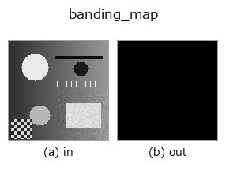

gray op• 資料種類:image → image
• 呼叫:fullseye.apply(img, "banding_map", a=0.5, b=0.5)(2-D 的模型是一張圖 + 兩個純量旋鈕 a,b∈[0,1])

*圖為在 128×128 合成輸入上實際執行的輸出。左為輸入，右為輸出。點雲以俯視散點顯示(亮度 = z)，一維序列為折線，體資料為沿 z 的最大值投影，影片為中間影格，複數影像為振幅；無法成像的回傳值直接顯示數值。*
掃描旋鈕 a(0.1 / 0.5 / 0.9，另一旋鈕取預設):
▸ banding_map: 旋鈕 a 掃描 (文件網站)
*旋鈕 b 不改變輸出(實測: 0.1 / 0.5 / 0.9 相同)。*
換別的影像(合成場景 / 照片 / 硬幣。上排為輸入，下排為對應輸出。旋鈕取預設):
▸ banding_map: 其他輸入影像 (文件網站)
*第 4 欄是彩色 (H,W,3) 輸入。此運算子能正確處理顏色而不跨通道(不把顏色通道當作第三個空間軸摺積)。*
回傳可見色階斷層(色帶)的位置。a 為位元數，b 為視窗。
階躍「可見」的條件是 3 個條件同時成立，此 op 把這 3 個依序相乘。
1. 落在步長網格上 —— 值位於 k*Δ 的網格上。未經量化的影像沒有色帶（浮點雜訊在這一步被去除）。
2. 視窗內恰好變化 1 個步長 —— 視窗內最大與最小之差（peak-to-peak）為 Δ 的 1 倍。既不是 0 倍（平坦），也不是 2 倍以上（真正的輪廓）。
3. 是稀疏的線 —— 階躍以沿等高線的細線形式出現。若大範圍一齊響應，那不是階躍，而是抖動或細密的紋樣。
a 是量化的位元數 1〜8（若輸入已量化，則指定其階數）。b 是視窗的大小（3〜9 像素）。
做成這 3 級的理由（實測）：只用 peak-to-peak 判定時，白雜訊中 41.7 % 的像素、有序抖動後的影像中 97.7 % 的像素被判為「階躍」—— 因為局部 ptp 只要碰巧等於 Δ 就滿足條件。條件 1 去除雜訊，條件 3 去除抖動。在量化到 3-bit 的斜坡上，7.0 %（即階躍線本身）被保留下來。
適用條件：(1) 輸入的位元數弄錯就完全不起作用 —— 不清楚時先用 effective_bit_depth 量測。(2) 輸入只要經過一次平滑內插、重新取樣，條件 1 就會失效（偏離網格）。若要量測階躍，應套用於剛量化後的影像。
• 範例資料目錄(下載 URL / 授權) —— 2-D 用 skimage.data(BSD/公有領域)加合成圖,3-D 給出真實資料源(Stanford/PDS 等)的下載 URL。
• 運算子來歷與參考文獻 —— 該運算子族所依據的研究/方法出處。
• 演算法的正典(作者、年份)與用途見上面的族使用指南。
下面的程式已確認可以執行(與圖相同的輸入)。在 Studio 說明中，此區塊會變成按鈕，可當場載入並執行。
banding_map 0.50 0.50
• gallery2d_gray_arith — py -3.11 examples/gallery2d_gray_arith.py
image 作為輸入)identity · gaussian · mean_box · bilateral · unsharp · median · min_filter · max_filter
gray)gamma · quantize_uniform · quantize_lloyd_max · quantization_error · dither_ordered · dither_floyd_steinberg · companding_mu_law · invert
*Provenance: ops.py — 2D 運算子登記表。本條目由 tools/opdocs.py md 自動產生(請勿手動編輯)。*
© 2026 Kazufumi Furuse — Fullseye operator documentation. Licensed under Apache-2.0.